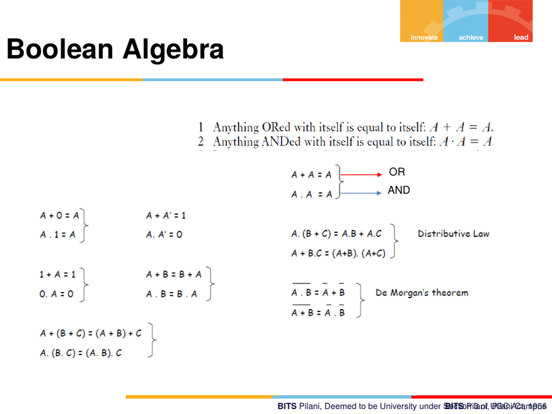
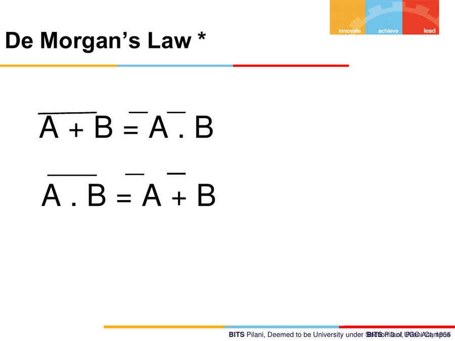
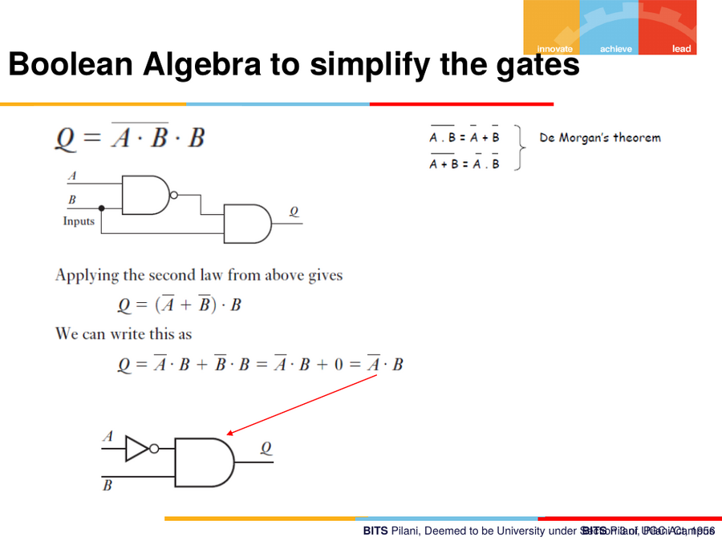
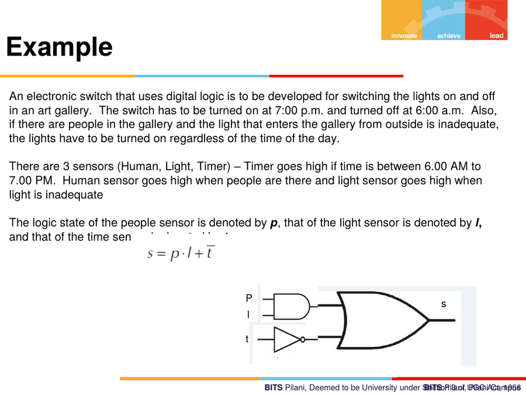

13. Boolean Algebra & De Morgan's Law
13.1 Motivating example — switches operating a machine
Three scenario statements used to introduce Boolean expressions from real switch arrangements:
(a) A machine can be operated by either of two operators, A or B — the power can be connected from either of two locations.
Y = A + B (OR — two switches in parallel; either closes the circuit)
(b) Due to safety requirements, power must be channelled through both stations to operate the machine.
Y = A · B (AND — two switches in series; both must close)
(c) Final safety regulations allow either station to power the machine
only if the operator is out of danger (implying a third safety
condition C must also be satisfied).
Y = (A + B) · C

13.2 Basic Boolean identities
Idempotent laws:
A + A = A (Anything ORed with itself equals itself)
A · A = A (Anything ANDed with itself equals itself)
Complement laws:
A + 0 = A A · 1 = A
A + A' = 1 A · A' = 0
1 + A = 1 0 · A = 0
Commutative laws:
A + B = B + A
A · B = B · A
Associative / Distributive laws:
A + (B + C) = (A + B) + C
A · (B · C) = (A · B) · C
A · (B + C) = A·B + A·C (Distributive law)
A + B·C = (A+B)·(A+C)
13.3 De Morgan's Theorem
The two De Morgan identities — essential for converting between AND/OR forms and for implementing logic using only NAND or only NOR gates:
A + B = A' · B' (complement of OR = AND of complements)
A · B = A' + B' (complement of AND = OR of complements)

Worked simplification using De Morgan's law
Given circuit implementing:
Q = (Ā · B̄) · B̄
Applying De Morgan (Ā·B̄ = A+B, then working through):
Q = (A + B)' · B ... (applying the theorem step shown on slide)
Q = Ā·B̄·B = Ā·B̄ + B̄·B = Ā·B̄ + 0 = Ā·B̄
Net result: a two-level NAND-based circuit simplifies down to a single
NOT gate feeding an AND gate (Q = Ā · B), demonstrating how
Boolean algebra reduces gate count in real digital circuits.

13.4 Worked design example — art gallery light switch
Problem statement (verbatim from slide):
An electronic switch that uses digital logic is to be developed for switching the lights on and off in an art gallery. The switch has to be turned on at 7:00 p.m. and turned off at 6:00 a.m. Also, if there are people in the gallery and the light that enters the gallery from outside is inadequate, the lights have to be turned on regardless of the time of day.
There are 3 sensors: Human, Light, Timer. Timer goes HIGH if time is between 6:00 AM and 7:00 PM. Human sensor goes HIGH when people are present. Light sensor goes HIGH when ambient light is inadequate.
Variable definitions:
- p = people/human sensor logic state
- l = light sensor logic state
- t = timer sensor logic state
Derived Boolean expression:
s = p · l + t̄
Reading it out: the lights switch ON (s = 1) if (people present AND
light inadequate), OR if the timer is NOT in the
"daytime/gallery-open" window (i.e. it's night-time, per the 7 PM–6 AM
rule, hence t̄ — complement of the daytime timer signal).
This is implemented as an AND gate (p · l) feeding into an OR
gate together with the (inverted) timer signal.

13.5 Why this matters for the course
Boolean algebra and gate design are the bridge between sensor logic signals (each sensor reduces to a HIGH/LOW state after the ADC stage — see notes 01–02) and the ECU's digital decision-making. The art-gallery example is structurally identical to how a vehicle ECU might combine multiple sensor states (e.g. occupancy + ambient light + time) to decide an output action (turn on interior lighting), which is exactly the kind of logic block that eventually sits inside embedded automotive controllers.